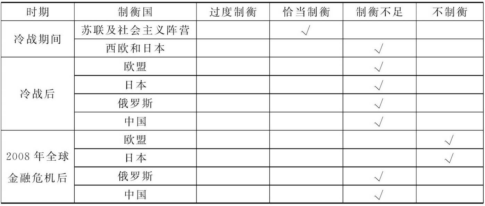
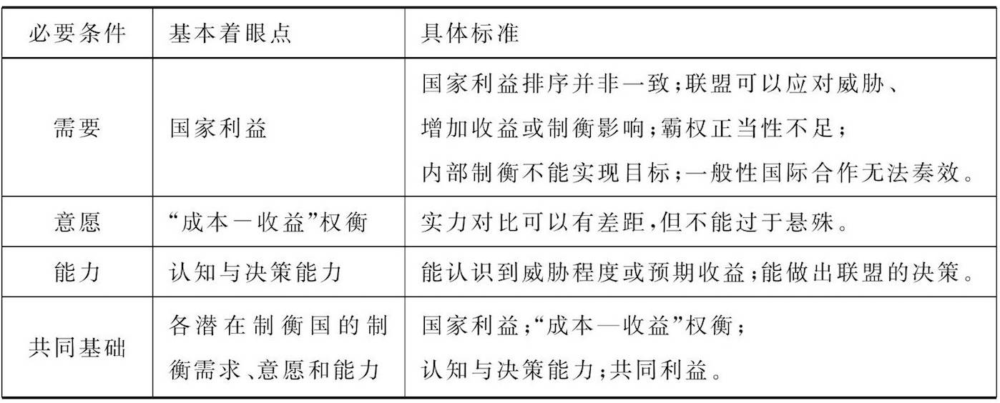

收录于合集
本文经国政学人公众号首发，转载请注明来处！
简
孙西辉
中国社会科学院亚太与全球战略研究院
吕虹
山东大学政治学与公共管理学院、中共山东省委党校
摘要
根据各种联盟动机理论的逻辑，各国应该而且必须联合预防霸权出现或制衡已经形成的霸权。现实中的美国霸权虽然受到部分国家的某些制衡，但大多属于被动的反应式制衡且制衡程度不足，也没有形成霸权制衡性联盟。学术界对这一现象的解释存在明显不足，霸权制衡性联盟缺失成为学术界需要认真思考的理论问题。换个角度来看，对霸权制衡性联盟缺失的研究，也是对建立霸权制衡性联盟所需条件的研究，这方面的必要条件主要涉及需求、意愿、能力和共同基础四个方面。
关键词
联盟动机理论 国家利益 霸权 霸权制衡性联盟
摘要霸权制衡性联盟的应然性
现实主义学派对联盟动机的论述最为深入。在笔者看来，尽管现实主义学派各分支对于国家利益的认识不尽相同，但都认为维护国家利益的外部途径是通过联盟建立某种均衡态势。根据现实主义国际关系理论的逻辑，各国不可能容忍霸权的出现，而是会通过联盟维持均势，预防霸权；即便出现了霸权，也会积极联合起来对抗霸权。
（一）基于“权力均衡”逻辑的分析
传统现实主义和结构现实主义都坚持“权力均衡”原则，但出发点不同。前者侧重单元层次，后者侧重体系层次 。摩根索解释了权力均衡的基本功能和实现权力均衡的基本方式。他指出，“权力均衡是一个国家联盟的保护性手段，其成员渴望维持自己的独立，反对另一个国家建立世界性统治（以前称为世界帝国）的企图。”在他看来，“整个西方世界的历史中，权力均衡大体都是通过联盟实现的。”沃尔兹从理论层面解释了均势的理论基础与国家本质假说。他认为，“严格地说，均势理论的根基在于国家的假设：国家是单一行为体，最低要求是维持自身的生存，最高目标则是统治世界。国家或是国家领导人，都试图以或多或少合理的方式使用既有手段去实现可见的目标。这些目标可分为两大类：一是内部手段（增强经济能力和军事力量，实行明智的战略），二是外部手段（加强和扩大联盟，或是削弱和缩小敌对联盟的力量）。”在他看来，均势是一种不依赖于国家主观意图的客观规律，“无论国家是否愿意，它们都将形成均势。”可见，按照“权力均衡”原则的逻辑，如果有国家想要成为霸权国，就会打破权力平衡，其他国家都应该建立联盟加以反对。同样道理，如果有国家因某些特定因素已经成为霸权国，其他国家也应该建立霸权制衡性联盟。
（二）基于“威胁制衡”逻辑的分析
进攻性现实主义和防御性现实主义都认同结构现实主义的基本假设，即在国际无政府状态下，安全是国家追求的首要目标。两者的主要分歧在于对国际体系的性质和国家如何获得安全的看法 。进攻性现实主义强调国际体系的霍布斯主义性质，认为这决定了安全的稀缺性，迫使各国为了获取安全展开激烈竞争并常常使用进攻性策略。米尔斯海默认为，“一国的终极目标是成为体系中的霸主”；“国际体系结构而不是国家个体的属性促使其以进攻的方式思维、行动和追求霸权。”他明确提出，“潜在霸主控制越多的相对权力，体系中所有被威胁的国家就越有可能摒弃推卸责任而形成一种制衡联盟。”防御性现实主义认为，国际社会虽然是无政府状态，但这不必然导致激烈的冲突和战争；安全并不稀缺，而是充足的；国家获取安全的最佳途径是防御性策略或维持现状的策略；在特定情况下，当“进攻—防御”的平衡关系有利于进攻一方时，国家也会因“安全困境”加剧而发生冲突；追求安全不会导致国家的侵略行为，只有当生存受到威胁时，国家才会进攻。沃尔特认为，“追随强者”虽然也时有发生，但“制衡”更普遍，历史上欧洲建立霸权的努力都因防御性联盟而遭到挫折，因为这种联盟的目的就是打败霸权。在他看来，国家依靠与威胁最小的一方联盟进行制衡，而很少追随威胁最大的一方。因此，按照“威胁制衡”原则，进攻性现实主义和防御性现实主义都认为各国应该联盟预防霸权或打败霸权。
（三）基于“利益平衡”逻辑的分析
新古典现实主义吸收了新现实主义的国际结构观点，同时还重视国内因素对外交政策的影响，恢复了传统现实主义重视国家和个人层次以及对外政策分析的传统 。新古典现实主义把体系结构因素视为首要变量，把国内变量当作次要变量。此外，新古典现实主义引入两个干预变量：一是国家决策者的观念及其对权力的感知；二是国家能力以及国家与社会的关系。在新古典现实主义者看来，国际无政府状态既不是进攻性现实主义认为的霍布斯式的，也不是防御性现实主义认为的温良的，而是模糊难辨的，国家难以分清安全是稀缺还是充裕。施韦勒改进了“威胁制衡”理论，认为联盟不仅是为了安全，也是为了利益。制衡性联盟是为了应对威胁，但“追随强者”联盟应分不同情况分析：受到威胁的国家“追随强者”或者为了安全而屈服于威胁，或者为了分享胜利的好处；未受到威胁的国家“追随强者”是为了获得收益。在国家层面，根据各国维护或获得它们已有或觊觎的价值观，国家可分为包含狮型和羊型两类的“维持现状”国家和包含豺型和狼型两类的“修正主义”国家，前者倾向“制衡”和寻求安全，后者倾向“追随强者”和增加收益。在国际体系层面，修正主义国家与维持现状国家的实力对比决定体系的稳定性。施韦勒认为，修正主义国家是联盟行为的主要动因，维持现状国家则是被动“反应者”。克里米亚战争之后，法国欲重建霸权，这使得权力均衡模式再度重启。因此，按照“利益平衡”原则，新古典现实主义并非只关注收益而不考虑安全，它认为如果有国家追求霸权，维持现状国家将会联合起来进行抵制。
霸权制衡性联盟缺失及相关理论解释
根据现实主义关于联盟动机相关理论的逻辑，无论出于平衡权力还是威胁或利益，面对潜在或现实中的霸权，其他国家都应该进行制衡；当依靠增加自身实力的内部制衡难以奏效时，各国应该建立联盟进行外部制衡 。然而，美国霸权在其形成的过程中，仅遇到少数国家的制衡，当美国成为全球霸权国之后，各国基本上只是被动地做出一些反应式制衡，而非主动和积极地进行制衡，更没有形成霸权制衡性联盟。
（一）美国霸权以及大国对霸权的制衡
美国建国后不久，迅速走上对外扩张的道路，领土面积急剧增加；南北战争之后，美国扫清了资本主义发展的障碍，经济快速发展，至19世纪末成为世界上最大的工业生产国；第二次世界大战之后，欧洲各国普遍衰落，美国的实力在全球具有绝对领先优势；冷战期间，美苏建立了各自的阵营和势力范围，美国在资本主义世界建立起一套经济、政治和军事霸权秩序；冷战后，美国成为唯一的超级大国，全球霸权得以建立。美国霸权自冷战爆发以来也曾遇到一些国家不同程度的制衡，但这些制衡大多是被动的和反应式的。此外，根据施韦勒对“制衡”的划分标准，各国对美国霸权的制衡基本上属于“制衡不足”类型（见表3）。

表3
（二）针对美国的霸权制衡性联盟缺失的原因
分析表明，美国霸权自冷战以来的确遇到一些国家的制衡，但也应该看到这种制衡存在两方面的问题：一方面，各国的行为并非主动或积极制衡美国霸权，更多是面对美国霸权压力的一种被动反应；另一方面，各国的制衡行为都是单个国家的行动，制衡力度不足且没有形成国家间的霸权制衡联盟。因此，需要从理论的角度探讨为何没有出现针对美国霸权的制衡性联盟。综合来看，学者对霸权制衡性联盟缺失的解释可归纳为三个方面：
第一，基于制衡国因素的分析。一是潜在制衡国实力不足 。威廉·沃尔福思认为，美国与其他主要大国（集团）的实力差距巨大，各国无法聚集与美国相匹敌的实力，所以制衡联盟不可能出现。 二是“成本—收益”的理性考虑妨碍形成制衡性联盟 。沃尔福思认为，在霸权国与潜在制衡国实力对比悬殊的情况下，制衡并非有效手段。原因在于：共同受益的逻辑削弱了制衡意图；各国通常更关注周边环境而非全球平衡；组建制衡性联盟既影响成员国的安全又影响其独立性。米尔斯海默认为，“受威胁的国家经常在联盟成员如何分摊任务的问题上存在分歧。毕竟，所有国家都是利己的行为体，都具有以最小代价遏制侵略者的强烈动机。如上所述，这一问题还有另外一个原因，即联盟成员国之间还有一种推卸责任的冲动。最后，联盟成员国之间很可能就哪个国家领导联盟的问题存在摩擦，当该联盟最终作为一个战略出现时就更是如此。” 三是国家内部不一致性妨碍联盟决策 。施韦勒认为，制衡不足并不简单地取决于特定系统环境因素，还要考虑潜在制衡国国内因素的四个变量，即精英共识、政府或政权的脆弱性、社会凝聚力和精英凝聚力。
第二，基于霸权国因素的分析 。 一是霸权国实力优势过大 。沃尔福思指出，“美国比其后最强大国家或所有大国总和还要强大，这种巨大的实力优势超过二百年来任何一个领导国。此外，美国是现代国际关系史上第一个在经济、军事、技术、地缘政治等所有实力构成要素方面具有绝对优势的领导国。 二是美国的策略性规避 。有学者认为，美国在维持自身实力的同时，要保持克制，尽量减少美国权力中的进攻因素，传达美国的友善意图，以此减少受到制衡的风险。奥巴马政府时期，美国改变了小布什政府的单边主义外交政策，采取“倾听”和克制的低姿态外交。此外，有学者强调美国霸权利用制度手段，规避了依据实力解决方式的风险，塑造了“仁慈”霸权的形象，弱化了其他国家的制衡意愿。 三是美国霸权的不完全性 。有学者认为，一种完全的霸权不仅需要拥有绝对优势的实力，还需要其他国家、特别是大国的真正认可，但美国在亚太地区距离获得大国认可还有差距，因而美国霸权是不完全的霸权。这一观点的言外之意是，美国在亚太地区不具有霸权地位，因而亚太地区自然不会形成针对美国的制衡性联盟。
第三，基于环境因素的分析 。 一是国际体系因素 。沃尔福思认为，大国在单极体系的行为与在多极或两极体系中不同。单极结构阻碍了前者对手联合制衡美国，只要美国保持经济发展并维持全球军事存在，其他国家就不敢或不愿制衡它，反而更愿意“搭便车”。沃尔特认为，单极意味着唯一超级大国没有实力相当的意识形态对手,即使有也难以对霸权国家产生威胁。 二是地理位置因素 。沃尔特将地理邻近性作为衡量外来威胁大小的一个指标，沃尔福思也着眼于地理位置解释制衡性联盟缺失的原因，他认为美国霸权是全球性的，而其他强国都集中在欧亚大陆，鉴于权力分布的空间性、安全收益预期和集体行动问题，其他国家联盟制衡美国霸权的动力较小。 三是规范、认同和价值观因素 。欧文认为，“国家或其精英信仰的规范，影响其是否选择制衡某个国家，也就是说，一个国家的战略选择并非完全取决于其相对权力，而是取决于相对权力与相对意识形态的互动，即其统治精英与其他国家的统治精英在意识形态上的差异”；“只要美国利用自己权力的方式与其他国家统治精英的目标一致，这些国家就不会选择与美国对抗。”托马斯·里斯认为，当代世界秩序中的大国关系主要体现为自由民主国家安全共同体，强调共同的自由价值观念和集体认同、各国的复合相互依赖、国际治理结构，这种自由安全共同体解释了为何其他国家特别是欧洲国家没有制衡美国。
建立霸权制衡性联盟的必要条件
换个角度来看，对霸权制衡性联盟缺失的研究，也是对建立霸权制衡性联盟所需条件的研究。 在理论方面，这是完善联盟理论的必要环节；在实践方面，探讨建立霸权制衡性联盟的条件具有重要的现实意义。 鉴于各种相关因素复杂多样，本文仅尝试讨论建立霸权制衡性联盟所需的必要条件，主要涉及需求、意愿、能力和共同基础四个方面（见表4）。

表4 建立霸权制衡性联盟的必要条件
第一，建立霸权制衡性联盟的需求。从理性分析的角度看，制衡霸权面临巨大的风险与困难，如非迫不得已，各国不会轻易对霸权国进行制衡 。因此，制衡霸权的必要性是建立霸权制衡性联盟的基本前提。笔者认为，要不要制衡霸权国，从根本上说仍取决于国家利益，但国家利益的具体指向并非一成不变的常量，各国的国家利益不可能完全一致。中外学者从不同角度研究界定了国家利益的内涵，可归纳为四种方式：一是列举要素方式；二是系统论角度；三是广义需求角度；四是生存与发展角度。 本文认为，国家利益指有利于国家生存和发展的物质与精神收益，包括安全利益、政治利益、经济利益和文化利益 。此外，由于发展程度和综合实力不同，各国面临的威胁与机遇也不尽相同，这导致各国在对外政策中追求国家利益的优先次序上有较大差异。 因此，建立霸权制衡性联盟的根本动因是维护国家利益，可以是应对威胁、追求利益或平衡影响；建立霸权制衡性联盟的外部必要前提是霸权的正当性不足；建立霸权制衡性联盟的内部必要前提是威胁/收益程度的界限：一是依靠增加自身力量的内部制衡无法实现目标；二是凭借一般性国际合作不能奏效 。
第二，建立霸权制衡性联盟的意愿。从逻辑分析的角度看，有制衡霸权的需求不代表潜在制衡国一定会建立霸权制衡性联盟，制衡霸权的意愿是建立霸权制衡性联盟的关键条件 。笔者认为，想不想制衡霸权国，关键看潜在制衡国对制衡行为的“成本—收益”权衡。在这方面，一个重要的指标是潜在制衡联盟与霸权国之间的实力对比。本文认为，由于霸权本身意味着其实力地位超群，其他国家难以望其项背很正常，因此潜在制衡联盟的实力可以与霸权国有一定差距，但这种差距不能太大，否则会导致一些观望的潜在制衡国难以下决心进行联盟制衡。
第三，建立霸权制衡性联盟的能力。从现实生活中做事经验的角度看，有制衡霸权的需求和意愿仍不能保证潜在制衡国必然能够建立霸权制衡性联盟，制衡霸权的能力是建立霸权制衡性联盟的必备条件。笔者认为，能不能制衡霸权国，受到许多因素的影响，但潜在制衡国的认知和决策能力非常重要 。例如，潜在制衡国能否准确认识到受威胁的程度或可能的预期收益，能否及时做出联盟制衡的决策等。
第四，建立霸权制衡性联盟的共同基础 。从逻辑分析的角度看，制衡霸权的需求、意愿和能力，只代表潜在制衡国具备了个体制衡的必要条件，建立霸权制衡性联盟还需要找到潜在制衡国之间进行联盟制衡的共同基础。 笔者认为，建立霸权制衡性联盟的共同基础应着眼于各潜在制衡国的制衡需求、意愿和能力，即它们在国家利益取向、“成本- 收益”权衡、认知与决策能力等方面因素的排列组合 。一般而言，当各潜在制衡国的需求、意愿和能力越强且一致，建立霸权制衡性联盟的阻力就越小，建成的可能性就越大。当然，由于各国首选的具体国家利益不尽相同，建立制衡性联盟的动机也有很大差异，各潜在国的需求和意愿完全一致的可能性极小，但这不代表不能建立制衡联盟。例如：帕特里夏·韦茨曼指出，“在某些特定情况下，敌对国家之间也可能有结成联盟的动机，以此应对共同的威胁或控制与管理彼此的相互威胁。”因此，建立霸权制衡性联盟的共同基础是找到基本一致的共同利益，而非完全一致的国家利益，关键是协调各国立场与态度。
注：本文系统整理了主流国际关系理论关于建立联盟动机的论述，简要梳理了冷战后各大国（集团）对美国霸权的制衡，文章有删节，完整内容及参考文献可参看原文。
文章来源：《世界经济与政治论坛》2017年第5期
人大报刊复印资料《国际政治》2017年第11期全文转载
编辑：ササ 里仝
轻点下方广告支持我们
我们将更好地为您呈现精彩内容！